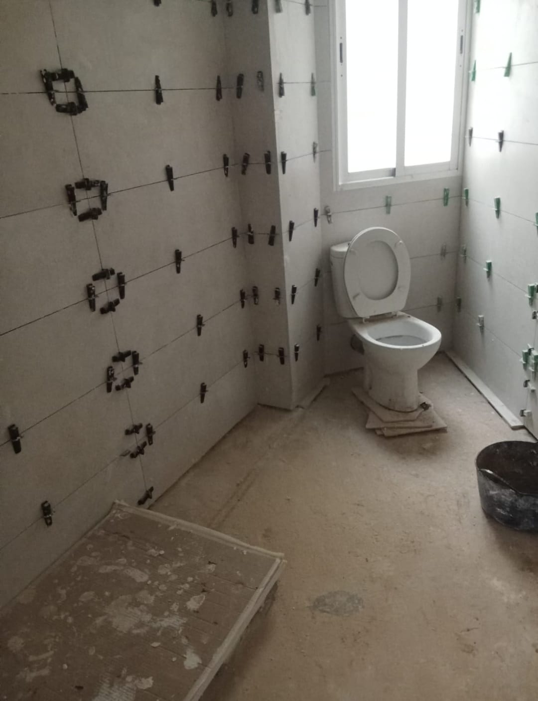
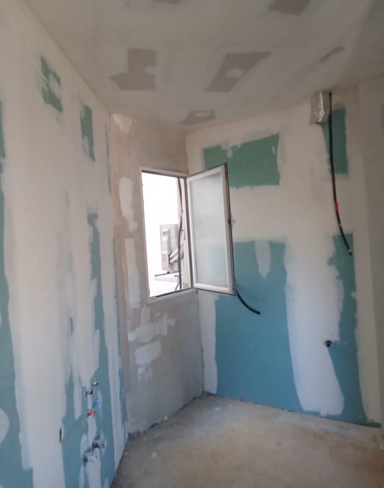

Esta obra fue en el barrio de Mestalla, un baño grande que se hizo de casi treinta metros cuadrados. En las viviendas de esta zona de Valencia nos encontramos a menudo con aseos muy amplios pero con distribuciones anticuadas y revestimientos cerámicos de hace más de cuarenta años con juntas ennegrecidas y tuberías de plomo. Aquí acometimos una reforma integral de verdad: picamos todo el alicatado antiguo de pared a suelo hasta dejar el ladrillo vivo al descubierto, desescombramos a fondo y saneamos el soporte.
CRÓNICA DE OBRA REAL
Valencia Capital · Barrio de Mestalla · Baño de 30 m²
El Salto Radical en Mestalla: Cómo Convertir un Baño Antiguo en un Espacio de Alta Gama
Por Fabio Toro · Oficial Maestro de Albañilería · Maestros de la Construcción
Haz clic sobre cualquier fotografía para verla a pantalla completa en alta resolución

1. Demolición Integral en Mestalla 🔍 Clic para ampliar
Picado hasta el ladrillo: Retirada del azulejo primitivo y saneado exhaustivo para arrancar la nueva fontanería y el alicatado sobre firme sano.
En este baño renovamos toda la red de fontanería con tubería multicapa embutida para agua fría y caliente, dejando las tomas a nivel láser exacto para no tener desviaciones con la grifería. Además, en Mestalla se hizo todo el sistema de pladur cielo raso en el techo, lo que nos permitió bajar la cota lo justo para embutir focos estancos y ocultar las derivaciones de ventilación y electricidad sin alterar la estructura del piso.

2. Fontanería y Preparación 🔍 Clic para ampliar
Instalaciones y cielo raso: Rozas saneadas con multicapa, bajante replanteada y estructura de pladur en el techo.
El punto fuerte fue el alicatado de paredes y suelo con piezas porcelánicas rectificadas de gran formato con efecto mármol. Para que no quede ni el más mínimo resalte, usamos calzos autonivelantes y cuñas tensoras en todas las uniones de las placas, apretándolas con tenazas milimétricas mientras fragua el cemento cola flexible C2TE. Así nos aseguramos de que el paño de pared quede tan plano que al pasar la yema de los dedos de una pieza a otra no se sienta ninguna junta desalineada.
 3. Colocación con Cuñas Tensoras
🔍 Clic para ampliar
3. Colocación con Cuñas Tensoras
🔍 Clic para ampliar
Nivelación milimétrica continua: Sistema de calzos y cuñas de presión para garantizar un plano perfecto en piezas de gran formato con vetas de mármol.
Una vez retiradas las cuñas y limpiadas las ranuras, sellamos todas las juntas con lechada técnica hidrófuga antimohos. El paramento terminado muestra la continuidad de las vetas del mármol sobre un fondo marfil luminoso y elegante. Completamos los montajes de suelo, sanitarios y grifería, demostrando que con oficio de albañil y herramientas de tracción modernas cualquier baño antiguo se transforma en una estancia de auténtico lujo.
 4. Paramento Pulido Efecto Mármol
🔍 Clic para ampliar
4. Paramento Pulido Efecto Mármol
🔍 Clic para ampliar
Resultado final del revestimiento: Brillo uniforme, vetas continuas, plano impecable y sellado técnico duradero.
¿Tienes un baño antiguo en Valencia y quieres renovarlo de verdad?
Trabajamos sin intermediarios. Te explicamos los materiales adecuados, revisamos las tuberías y te garantizamos acabados sin sorpresas ni remates torcidos.